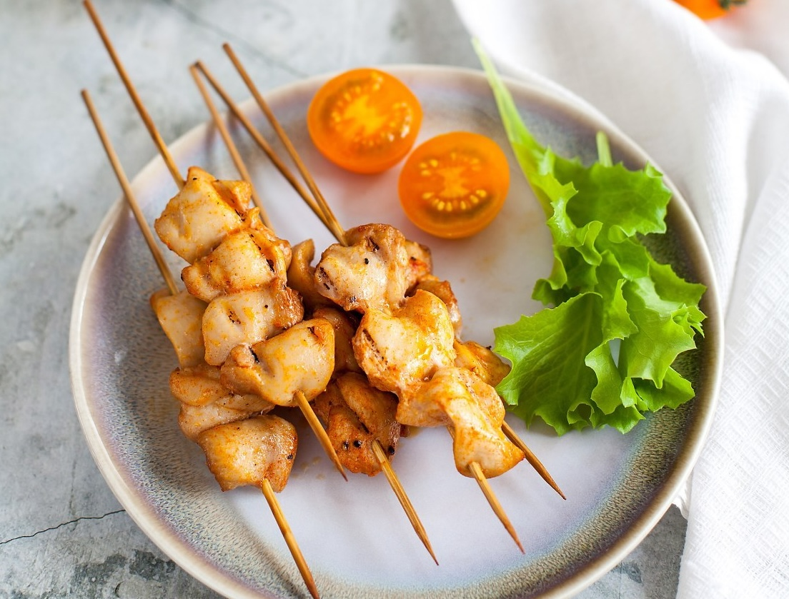

Эти шашлычки из курицы практически ничем не уступают тем, что мы привыкли жарить на мангале. Секрет в правильном выборе частей курицы и в специях. Их можно готовить как на сковородке, так и в духовке. Чтобы шашлычки оставались сочными, лучше взять мякоть бедра. Конечно, можно приготовить и из грудки, но ее очень легко пересушить. Впрочем, выбирать вам. Для придания шашлычкам аромата дымка рекомендуем добавить в маринад копченую паприку. Кладите понемногу, эта специя очень насыщенная и, если переборщить, ее вкус может быть слишком навязчивым.
Деревянные шпажки для шашлычков нужно обязательно замочить в холодной воде минут на 20, чтобы они не горели. Особенно это актуально, если вы решите приготовить эти шашлычки над углями, на гриле или барбекю, или под грилем в духовке.
Подавать можно как со свежими хрустящими овощами и зеленым салатом, так и с печеными овощами (цукини, баклажаны, сладкий перец). А если завернуть кусочек приготовленной курицы в салатный лист вместе с дипом и ломтиком помидора, получится не только сочно, но и максимально полезно. Такая подача мясных блюд на листьях салата распространена в разных уголках Азии, например, в Корее, Таиланде и Вьетнаме.
Кстати, о дипе… Фактически это гуакомоле, только с добавлением брокколи. Так что можно назвать его «броккомоле».
Удивлены? Еще больше удивитесь, когда попробуете. Брокколи в смеси с авокадо и специями становится не такой навязчивой.
Отличный способ включить в рацион брокколи, если она вам не очень нравится, ведь это чрезвычайно полезный овощ.
Дип из брокколи лучше не готовить впрок, долго он не хранится, окисляется.